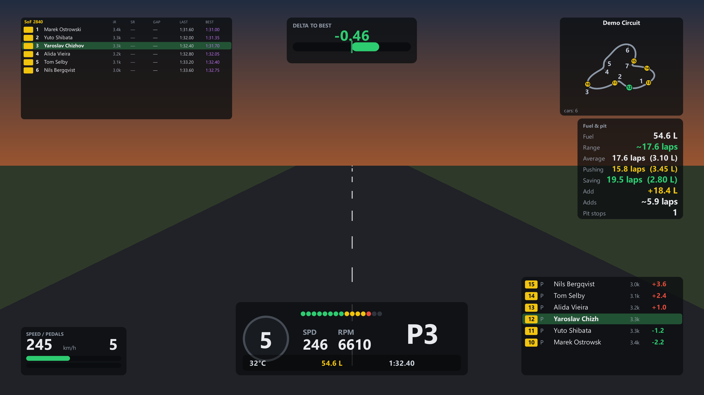
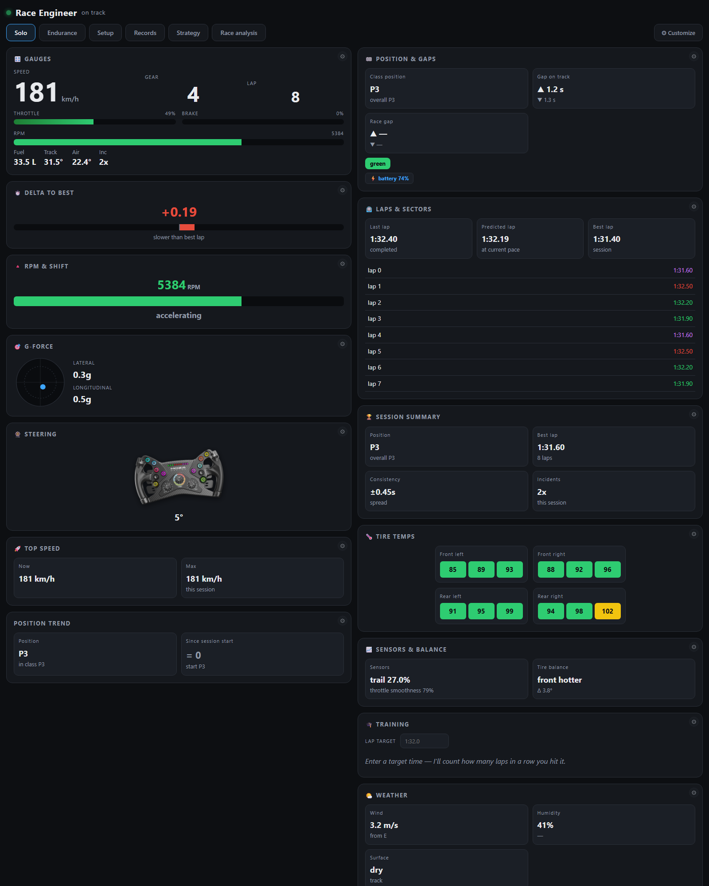
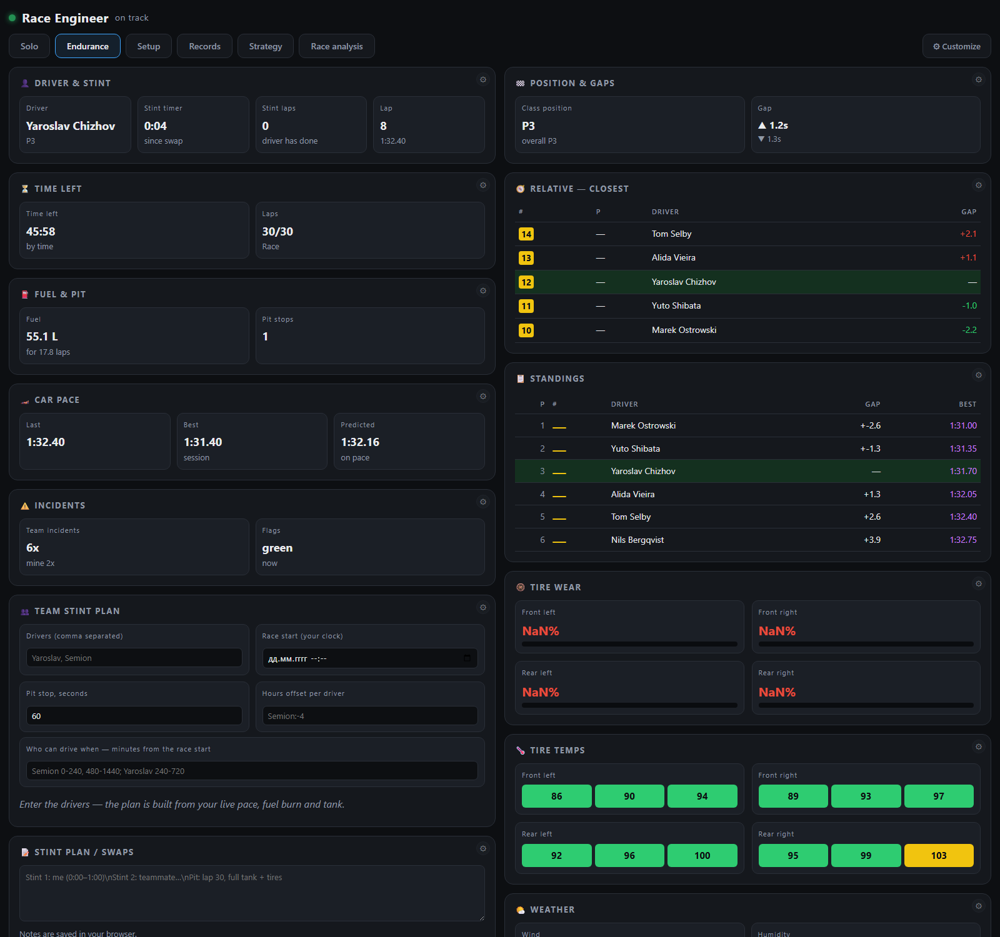
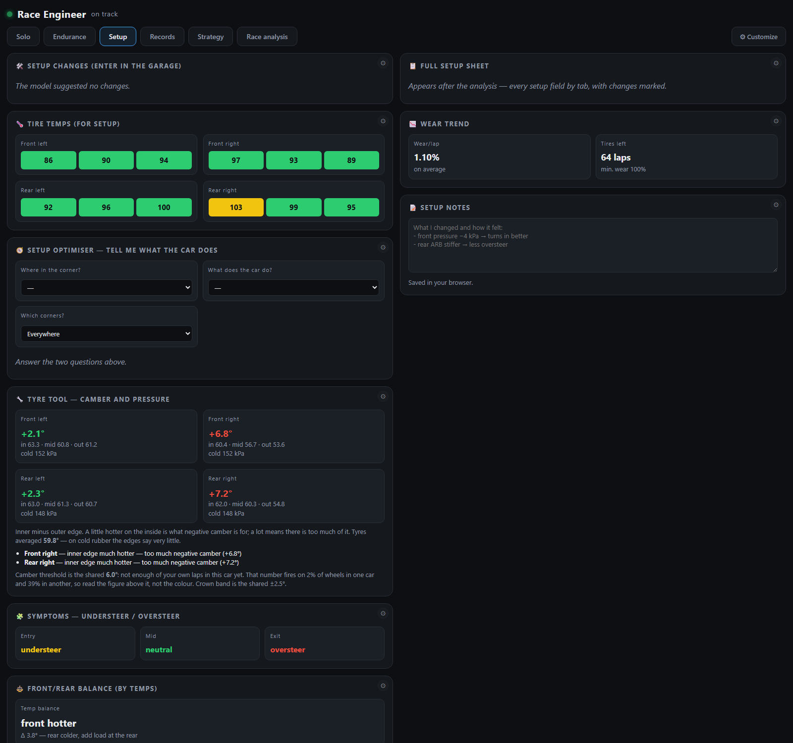

A dashboard on the second screen, an overlay of your own over the
game, and analysis once you climb out. A project, not a subscription: the data
stays on your machine and everything runs locally.

The overlay over the game: standings, delta, track map, fuel, pedals and relative gaps. Built from the real widgets on demo data.
The tread tells you two things without any guesswork. A hot inner edge means
there is more negative camber than the corner is using. A hot middle means the
tyre is crowned, which is pressure. Both are physics and neither depends on the
car.
Two dropdowns — where in the corner, and what the car does — and you get an
ordered list of what to change in the garage, each with the reason it works.
A delta to your best lap is one number, and it moves the whole way round. It
cannot tell you whether you lost the time in the first sector or clawed it back
in the third. The only way to find out was to finish, climb out of the car and
open a tab — which, on a long practice, nobody does.
InputsSpeed, gear and the pedal traces side by side.in Sprint race, Endurance, Practice / hotlap · 240×110 · soloPosition & gapsPosition in class, gaps to the car ahead and behind.in Sprint race · 220×170 · soloRelativeThe cars physically nearest you on track, not on the timesheet.in Sprint race, Endurance · 360×220 · soloStandingsThe full field, sorted the way race control sorts it.in Endurance · 620×300 · soloMy carWhich car you are in: badge and model name.not in any starter set · 240×74 · soloHead 2 headYou against one rival — the gap and the best-lap difference.not in any starter set · 390×140 · soloLaptime graphEvery lap as a bar, coloured by pace.not in any starter set · 300×160 · soloDelta traceA rolling trace of your delta to the best lap.in Practice / hotlap · 300×120 · soloLaptime spreadWhere your laps cluster, and which ones are outliers.not in any starter set · 300×132 · soloH. standingsThe field as a horizontal strip of driver cards.not in any starter set · 640×70 · soloLaptime logA table of laps: number, time, delta, track temperature.not in any starter set · 330×220 · soloBlind spotTwo wide bars at the screen edges when a car sits alongside.not in any starter set · 620×120 · soloCorner lossesThe three corners where the last lap lost the most time.in Practice / hotlap · 300×150 · soloSectorsWhere this lap is up or down, sector by sector.in Practice / hotlap · 240×132 · soloFuel & pitFuel left, burn rate and what the next stop needs.in Sprint race, Endurance · 230×220 · soloLapsLast, best and predicted lap — and the gaps between them.in Practice / hotlap · 210×150 · soloRace barA one-line HUD: gear, shift lights, delta and fuel.not in any starter set · 474×150 · soloDelta to bestDelta to your best lap, in one large number.in Sprint race · 220×120 · soloRPM & shiftRevs and the moment to pull the next gear.in Sprint race, Practice / hotlap · 200×130 · soloG-forceLateral and longitudinal load as a moving dot.not in any starter set · 150×150 · soloTop speedSpeed now, best this lap and best this session.in Practice / hotlap · 210×130 · soloSlipNot just that the car is sliding — which end is sliding.not in any starter set · 210×130 · soloPosition trendHow your position moved across the race.not in any starter set · 210×150 · soloSession summaryThe session in one card: position, pace, consistency, incidents.not in any starter set · 220×190 · soloTire tempsTyre temperature across three zones of every wheel.not in any starter set · 260×200 · soloTire wearRemaining tread, per wheel and per zone.in Endurance · 220×150 · soloSessionWhat session this is and how much of it is left.not in any starter set · 220×150 · soloDelta to recordYour track record and how far off it you are today.not in any starter set · 220×150 · soloERS / hybridHybrid charge and how fast you are spending it.not in any starter set · 210×150 · soloWeatherAir and track temperature, wind, humidity, time of day.in Endurance · 220×170 · soloFlagsFlags as they are shown, plus the ones already waved.in Sprint race · 240×70 · soloRadarCars around you drawn from above, at close range.in Sprint race · 150×150 · soloTrack mapThe circuit drawn from your own laps, with the field on it.in Endurance, Practice / hotlap · 240×200 · soloOptimal lapThe lap you could have driven from your best sectors.not in any starter set · 210×90 · soloPit helperPit lane: limiter, speed and where the box is.not in any starter set · 210×110 · soloSensors & balanceHow you work the pedals, measured over the stint.not in any starter set · 250×160 · soloDelta barDelta to best as a bar you can read without focusing.not in any starter set · 260×92 · soloWear graphTyre wear over the stint, as a line per wheel.not in any starter set · 240×160 · soloSpotterSpotter calls in text: car left, car right, three wide.not in any starter set · 210×110 · soloWeather radarRain approaching the circuit, and how soon.not in any starter set · 250×130 · soloDriver & stintWho is in the car and how long this stint has run.in Endurance · 240×138 · endurTime leftTime left in the race, big, with a progress bar.in Endurance · 240×130 · endurTeam incidentsIncident count for the whole team, not just you.in Endurance · 220×150 · endurSymptomsWhat the car does on entry, mid-corner and exit.not in any starter set · 250×180 · setupFront/rear balanceHeat balance front to rear — and the setup change it asks for.not in any starter set · 240×150 · setupWear trendHow fast the tyres are going away, and how much is left.not in any starter set · 220×150 · setupTyre toolWhat the tread edges say about camber and pressure.not in any starter set · 250×148 · setup
Shots rendered by python tools/render_widgets.py on demo data: the numbers and driver names are made up.
How you set it up
Pick an overlay on the left, watch it change in the middle, tune it on the right. No need to alt-tab into the game to see the result.The preview is the real widget on the real data — not a picture of one.Every widget carries its own settings, its own presets and a reset back to factory.
The second screen

The solo tab: gauges, delta, fuel, tyres, the track map and the field — everything from one lap in one place.

Endurance: who is in the car, how long is left, and what the team's incident count looks like while someone else drives.

Setup: what the car did on entry, mid-corner and exit — and the change the numbers ask for.
What is inside
47
overlay widgets
68
dashboard cards
6
tabs
26
API endpoints
Widgets by group: Solo — 40 · Endurance — 3 · Setup — 4.
The numbers come from the code, via python tools/build_catalog.py.
Why it works this way
Everything in one window
Telemetry, strategy, lap history and analysis — instead of four apps with four subscriptions.
An overlay of your own
Every widget is tuned on its own: colour, size and font of each number. Wheel buttons map to any action.
Nothing gets lost
Every lap lands on disk with its telemetry. History survives between sessions, so progress shows across dates, not one drive.
No smoothing
Raw values at a high refresh rate. Smoothing hides exactly what you open the numbers for — the scatter and the outliers.
Analysis in plain words
After a stint the model explains what the car was doing and suggests setup changes, with the reasoning attached.
Works offline
It all runs locally. No keys to anyone else's service, and no data leaves the machine.
What comes next
Up soon: a corner-by-corner lap breakdown with the cost of every
mistake in seconds, lap comparison by distance, and team strategy for endurance.
The full plan lives in docs/roadmap-overlay-2026-08.md.
Your data, and who owns this
Everything stays on your machine. Laps, telemetry, track maps and
settings are written next to the program and go nowhere else — no account, no
upload, no analytics. Two features reach the network because they cannot work
otherwise, and only once you set them up: Garage 61 for other drivers' laps,
with your own token, and the racing news feed. Neither sends anything about you.